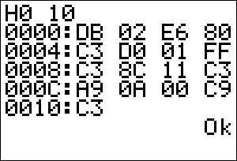
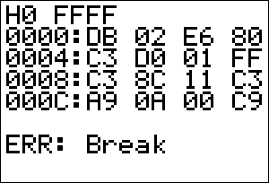

This CLI will be low-level: it will among other things let the user directly access the memory and hardware of the calculator. For those of you who have experience with the CalcSys application, this program will be like using CalcSys entirely through the Console function, except that each command will be one character instead of a string (to keep things simple, you understand).
Start: CALL Clear Restart: LD HL, Restart PUSH HL CALL GetStr CALL GetChar JP C, ErrCommand SUB 'A' JP C, ErrCommand CP 'Z'-'A'+1 JP NC, ErrCommand ADD A, A LD HL, CmdVectors LD D, 0 LD E, A ADD HL, DE b_call(_LdHLInd) JP (HL) Clear: b_call(_ClrScrnFull) b_call(_HomeUp) RET Quit: POP AF JR Clear ErrCommand: b_call(_NewLine) LD HL, errcmd_text b_call(_PutS) b_call(_NewLine) RET errcmd_text: .DB "ERR: Command", 0 CmdVectors: .DW ErrCommand ; A - .DW ErrCommand ; B - .DW Clear ; C - Clear screen .DW ErrCommand ; D - .DW ErrCommand ; E - .DW ErrCommand ; F - .DW ErrCommand ; G - .DW ErrCommand ; H - .DW ErrCommand ; I - .DW ErrCommand ; J - .DW ErrCommand ; K - .DW ErrCommand ; L - .DW ErrCommand ; M - .DW ErrCommand ; N - .DW ErrCommand ; O - .DW ErrCommand ; P - .DW Quit ; Q - Quit program .DW ErrCommand ; R - .DW ErrCommand ; S - .DW ErrCommand ; T - .DW ErrCommand ; U - .DW ErrCommand ; V - .DW ErrCommand ; W - .DW ErrCommand ; X - .DW ErrCommand ; Y - .DW ErrCommand ; Z -The program starts out at the label named, appropriately enough, Start. The procedure Clear is called to clear the screen and reset the cursor. Then the program falls into Restart where the real work begins.
First, the address of Restart is pushed onto the stack so the program can return here. Then a string is input from the user and is parsed character-by-character. If a blank line was entered, the program jumps to an error handler that prints a message describing the problem (in this case, an invalid command). Otherwise the character is processed to see if it is in the range 'A' to 'Z'. If not, there error handler is again processed.
In the case that we have a valid character, it is processed with a vector table to direct execution to the proper routine. At this point only the commands C and Q are defined. The rest just display Err: Command.
Compile and test this program to see that it works properly. Make sure that C clears the screen, Q quits the program, and everything else results in an error.
The first feature to add will be a command to do a hex dump of memory. This will be the most complicated feature to code, but it is very useful for verifying the results of the other commands we will add. The command line format to do a dump will be:
Haddress1 address2And the hex dump routine will display the hex values of each byte from address1 to address2. Now before we start coding the hex dump routine we need a way to extract the two parameters, and we also need a way to display 16-bit and 8-bit integers in hex:.
Read_HLDE: ; HL = first parameter ; DE = second parameter ; carry = 1 if there was an error CALL ConvHex16 RET C EX DE, HL CALL ConvHex16 EX DE, HL RET(The ConvHex16 routine can be found at the end of Day 27. This routine will be used quite a bit.)
OutHex_HL: LD A, H CALL OutHex_A LD A, L OutHex_A: LD C, A RRA RRA RRA RRA CALL _Nibble LD A, C _Nibble: AND $0F OR $30 CP 10 | $30 JR C, _Digit ADD A, 7 _Digit: b_call(_PutC) RETThat was the routine to display a number in HL or A as hex.
HexDump: b_call(_NewLine) CALL Read_HLDE JP C, ErrArgument DumpLoopA: LD B, 4 CALL OutHex_HL LD A, ':' b_call(_PutC) DumpLoopB: LD A, (HL) CALL OutHex_A b_call(_CpHLDE) JR Z, DumpEnd INC HL LD A, ' ' b_call(_PutC) DJNZ DumpLoopB XOR A LD (CurCol), A LD B, 48 EI HaltLoop: HALT LD A, $FD OUT (1), A IN A, (1) CP $FE CALL Z, Pause BIT OnInterrupt, (IY + OnFlags) JP NZ, ErrBreak DJNZ HaltLoop JR DumpLoopA DumpEnd: b_call(_NewLine) RET Pause: b_call(_RunIndicOn) Pause_Loop: HALT LD A, $FD OUT (1), A IN A, (1) CP $BF JR NZ, Pause_Loop b_call(_RunIndicOff) RETSo how does this work? First, we try reading the two addresses that have been supplied. If there is a problem, we escape to a new error handler:
ErrCommand: b_call(_NewLine) LD HL, errcmd_text ErrGeneral: b_call(_PutS) b_call(_NewLine) RET ErrArgument: LD HL, errarg_text JR ErrGeneral ErrBreak: RES OnInterrupt, (IY + OnFlags) LD HL, errbrk_text JR ErrGeneral errarg_text: .DB "ERR: Argument", 0 errbrk_text: .DB "ERR: Break", 0
When we get two valid addresses, we start the hex dump. First we report the current address being dumped. Then we display the hex values of the contents of a few bytes of memory. The small screen only allows us to display four bytes per line, so we put four into B and use a DJNZ loop to impose this limit. The display loop (DumpLoopB) is very simple in concept. The value of the current byte is read into A, and this is written to the screen. HL is now compared with DE (the terminating address) to see if we should stop. If so, we go to the end of the routine. Otherwise HL is incremented and the process continues.
The purpose of HaltLoop is to create a short delay after dumping four bytes so that the user has a little time to examine the output. But there's also something more going on here. The keypad is checked to see if [ENTER] is pressed using low-level input (I guess I could've used GetCSC, but I wanted to be fast), and in this case there is a call to Pause. Pause does nothing except wait for [CLEAR] to be pressed. It lets the user temporarily stop the hex dump to examine a section of interest. Also note that the run indicator is turned on while the hex dump is paused. The run indicator is generally annoying for normal program operation but pretty good for letting the user know the program hasn't crashed.
In the case where a really large section of memory is specified to be dumped, there is a way to abort by pressing the [ON] key. That's what the check for the OnInterrupt flag is there for. By the way, if you want to avoid seeing the ERR:BREAK message when you exit the program, reset this flag in the Quit procedure.
Compile and test this program to see that the hex dump works (don't forget to add a definition to CmdVectors). Play around with bad inputs, breaks, pausing, etc. Here're some screen shots:
|  |  |
Write: CALL Read_HLDE JP C, ErrArgument BIT 7, H JP Z, ErrFlash LD (HL), E ; Since we only want a one-byte value b_call(_NewLine) RET ErrFlash: b_call(_NewLine) LD HL, errfls_text JR ErrGeneral errfls_text: .DB "ERR: Flash", 0
Read_HLDEBC: ; HL = first parameter ; DE = second parameter ; BC = third parameter ; carry = 1 if there was an error CALL Read_HLDE ; Get first two parameters RET C PUSH HL CALL ConvHex16 LD B, H LD C, L POP HL RET CAnd the Load function itself is quite simple to synthesize. After all, it's mostly the theory from the previous versions.
Load: CALL Read_HLDEBC JP C, ErrArgument LoadLoop: BIT 7, H JP Z, ErrFlash LD (HL), C b_call(_CpHLDE) RET Z INC HL JR LoadLoopThe Zero command (Zaddress1 address2) is just a special case of the Load command where the loaded value is zero. All that is necessary is to set up the registers and jump into LoadLoop.
Zero: CALL Read_HLDE JP C, ErrArgument LD C, 0 JP LoadLoop
Enter: CALL ConvHex16 JP C, ErrArgument BIT 7, H ; This looks redundant, but in practise it is JP C, ErrFlash ; certainly better than the alternative: let the user EX DE, HL ; type in a long string and be greeted by an error Enter_LoopA: PUSH DE b_call(_NewLine) CALL GetStr POP DE Enter_LoopB: BIT 7, D JP Z, ErrFlash LD HL, (buf_ptr) ; This is to check if the buffer is empty LD A, (HL) OR A JR Z, Enter_LoopA CALL ConvHex16 RET C LD A, L LD (DE), A INC DE JR Enter_LoopBJust in case you were wondering, the comments are getting pretty sparse. Well, what did you expect? It's the last freaking day! You're not supposed to need explanations :-).
ErrDiv: LD HL, errdiv_text JR ErrGeneral errdiv_text: .DB "ERR: Div by 0", 0
The Find command searches within a specified block of memory for the first occurrence of a given byte. It is invoked as:
Faddress1 address2 value
Find: CALL Read_HLDEBC JP C, ErrArgument LD A, C EX DE, HL SBC HL, DE LD B, H LD C, L INC BC EX DE, HL CPIR DEC HL PUSH HL b_call(_NewLine) POP HL JP Z, OutHex_HL LD HL, find_text JP ErrGeneral find_text: .DB "Not found", 0The Transfer command will copy a block of memory to another location. It is invoked as:
Tsource destination sizeWe need to make Transfer smart enough to know in which direction to move the data.
Transfer: CALL Read_HLDEBC JP C, ErrArgument ADD HL, BC b_call(_CpHLDE) JR C, Forward EX DE, HL ADD HL, BC EX DE, HL DEC HL DEC DE Transfer_Loop1: BIT 7, D JP Z, ErrFlash LDD RET PO JR Transfer_Loop1 Forward: OR A SBC HL, BC Transfer_Loop2: BIT 7, D JP Z, ErrFlash LDI RET PO JR Transfer_Loop2Output should output a byte to a specified port (because it's always nice to have one more way to crash the calculator :-).
Oport value
And that's the program. I'm sure that there's a few commands you can think of to add. Some suggestions are
B[oolean] Calculates the AND, OR, and XOR of two 16-bit numbers
J[ump] JPs or CALLs an address
(useful for easter eggs ;-).
V[ariable] Given the name of a program, returns the data and symbol table location.